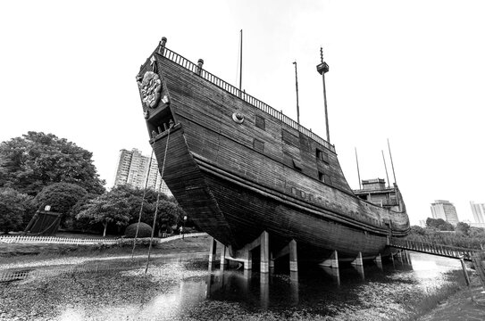
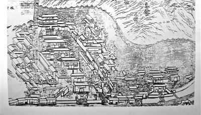

The Maritime Silk Road is the maritime section of the historic Silk Road that connected Southeast Asia, East Asia, and the Indian subcontinent, the Arabian Peninsula, eastern Africa, and Europe.
Started by the 2nd century BCE and flourished until the 15th century CE, the Maritime Silk Road was used by Persian, Arab and Chinese to trade.
East Asia Legend
An important chapter of the East Asian Maritime Silk Road is the Ming dynasty voyages of Zheng He and his enormous ships. Advances in shipbuilding technology made it possible to trade both farther and on a much larger scale.
These enormous vessels, known as treasure ships, were constructed in the shipyard that became the very starting point of Zheng He’s voyages.
Constructions Along the Voyages
Surrounding the treasure shipyard, a range of affiliated structures arose, together forming the broader landscape of the Maritime Silk Road. Temples were built nearby to host prayers before each departure; marketplaces and commercial quarters reflected the hope for prosperous trade; and along Zheng He’s routes, shipyards and repair workshops appeared in many harbors to maintain the fleet. Collectively, these constructions illustrate how the great voyages left a lasting imprint on port cities across the region.
The Treasure Shipyard
Temples were built nearby to host prayers before each departure; marketplaces and commercial quarters reflected the hope for prosperous trade; and along Zheng He’s routes, shipyards and repair workshops appeared in many harbors to maintain the fleet. Collectively, these constructions illustrate how the great voyages left a lasting imprint on port cities across the region.

Figure 1: Treasure Shipyard
Tianfei Palace
Tianfei Palace was built to honor Mazu, the sea goddess worshipped by sailors and merchants for protection during long and dangerous voyages. Before setting sail, Zheng He’s fleet is believed to have conducted rituals here, seeking safe passage and favorable winds. The presence of this temple highlights the spiritual dimension of the Maritime Silk Road, where maritime trade was closely intertwined with religious belief and ritual practice.

Figure 2. Tianfei Palace
Jingjue Temple
Jingjue Temple stands as an important religious site reflecting the cultural diversity fostered by the Maritime Silk Road. As maritime exchange intensified, Buddhism continued to spread alongside goods, technologies, and ideas. The temple illustrates how port cities became spaces of cultural and religious convergence, shaped by continuous interaction between travelers, merchants, and local communities.